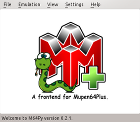
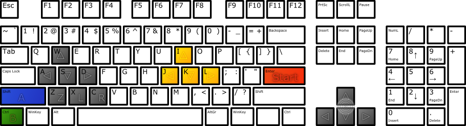

Mupen64Plus
Dieser Artikel wurde für die folgenden Ubuntu-Versionen getestet:
Ubuntu 16.04 Xenial Xerus
Ubuntu 14.04 Trusty Tahr
Zum Verständnis dieses Artikels sind folgende Seiten hilfreich:
Mupen64Plus  ist ein Nintendo64-Emulator und aktiver Fork des nicht mehr weiterentwickelten Mupen64 . Das Programm ist zu den gängigsten Spielen kompatibel und lässt sich sehr gut konfigurieren.
ist ein Nintendo64-Emulator und aktiver Fork des nicht mehr weiterentwickelten Mupen64 . Das Programm ist zu den gängigsten Spielen kompatibel und lässt sich sehr gut konfigurieren.
Installation¶
Das Programm kann direkt aus den Paketquellen installiert [1] werden:
mupen64plus (universe)
 mit apturl
mit apturl
Paketliste zum Kopieren:
sudo apt-get install mupen64plus
sudo aptitude install mupen64plus
Bedienung¶
Terminal¶
Spiele werden wie folgt im Terminal [2] gestartet:
mupen64plus Dateiname
Einstellungen können mit Parametern vorgenommen werden. Liegt zum Beispiel ein N64-Spielmodul im Verzeichnis ~/Spiele/N64 liegen, das man mit dem Grafikplugin Glade64 und im Vollbildmodus starten möchte, sieht der Aufruf folgendermaßen aus:
mupen64plus --fullscreen --gfx mupen64plus-video-glide64 "~/Spiele/N64/Spielmodul.v64"
Eine Liste möglicher Parameter kann man sich mit diesem Befehl anzeigen lassen:
mupen64plus --help
Grafische Benutzeroberfläche M64Py¶
|  |
| M64Py |
M64Py ist eine mit Python und Qt geschriebene Benutzeroberfläche. Sie erlaubt die Auswahl von Spielmodulen, die Konfiguration der Spiele-Controller und vieles mehr. Eine genaue Auflistung der Funktionen kann der Projektseite entnommen werden.
Beim SourceForge-Projekt m64py werden DEB-Pakete angeboten. Die unterstützten Ubuntuversionen und Architekturen werden aufgelistet. Nachdem man sie für die korrekte Ubuntuversion und Architektur geladen hat, müssen DEB-Pakete noch installiert werden.
Hinweis!
Fremdpakete können das System gefährden.
Tastenbelegung¶
Programm¶
| Tastenkürzel | |
| Taste(n) | Funktion |
| 0 bis 9 | Speicherplatz für Emulatorstatus auswählen |
| F5 | Emulatorstatus speichern |
| F7 | Emulatorstatus laden |
| F9 | Emulator zurücksetzen |
| F10 | Geschwindigkeit um 5% verringern |
| F11 | Geschwindigkeit um 5% erhöhen |
| F12 | Bildschirmfoto aufnehmen |
| F gedrückt halten | Mit 250%-iger Geschwindigkeit vorspulen |
| - | Den nächsten Frame zeigen, wenn das Spiel pausiert ist |
| Ü | Lautstärke um 5% verringern |
| + | Lautstärke um 5% erhöhen |
| M | Stummschalten |
| P | Pause |
| Alt + ⏎ | Volldbildmodus ein-/ausschalten |
| Esc | Programm ohne Nachfrage beenden |
Standard-Tastatursteuerung¶
Sofern kein unterstützter Controller angeschlossen ist, entsprechen standardmäßig folgende Tasten den N64-Controller-Knöpfen:
| Tastenkürzel | |
| Taste(n) | N64-Controller |
 | Analog-Stick |
| I J K L | C oben, links, unten, rechts |
 | D-Pad |
| Y (eigentlich Z , siehe unten) | Z |
| X | Linker Trigger |
| C | Rechter Trigger |
| ⏎ | Start |
| ⇧ links | A |
| Strg links | B |
| , | Mempack auswählen |
| . | Rumblepack auswählen |

Das Bild stellt die Zuordnung der Controller-Tasten bei einem englischen Tastaturlayout dar. Bei einem deutschen Layout sind allerdings Y und Z vertauscht, sodass die N64-Z-Taste an der "falschen" Stelle liegt. Um das zu korrigieren, kann man mit folgendem Befehl die Konfiguration anpassen:
sed -i -e 's/name = "AutoKeyboard"/name = "Keyboard"/' -e 's/Z Trig = "key(122)"/Z Trig = "key(121)"/' ~/.config/mupen64plus/mupen64plus.cfg
Für weitere Anpassungen in der ~/.config/mupen64plus/mupen64plus.cfg können die Tastennummern unter http://hg.libsdl.org/SDL/file/0afe0e38e02c/include/SDL_keysym.h nachgeschlagen werden.
Problembehebung¶
'Mupen64Plus Core' library not found.¶
Die grafische Oberfläche wurde vor Mupen64Plus selbst installiert, oder der Pfad zur Programmbibliothek unter "Settings" -> "Paths" -> "Library Path" wurde entfernt oder verändert. Der korrekte Pfad kann unter 32-Bit-Systemen wie folgt herausgefunden werden:
find /usr/lib/i386-linux-gnu -name libmupen64plus.so.*.*
Unter 64-Bit-Systemen lautet der Befehl:
find /usr/lib/x86_64-linux-gnu -name libmupen64plus.so.*.*
Controller-Einrichtung funktioniert nicht¶
Wenn der Controller überhaupt nicht funktioniert oder die Controller-Einrichtung in der grafischen Oberfläche unter "Settings" -> "Plugins" -> "Input" -> "Configure" nicht gespeichert wird, muss die Datei /usr/share/games/mupen64plus/InputAutoCfg.ini mit einem Texteditor [3] mit Root-Rechten [4] geöffnet werden.
In der Datei fügt man den folgenden Abschnitt ein oder kopiert stattdessen ein bestehendes Profil.
[Beispiel-Controller] plugged = True plugin = 2 mouse = False AnalogDeadzone = 4096,4096 AnalogPeak = 32768,32768 DPad R = hat(0 Right) DPad L = hat(0 Left) DPad D = hat(0 Down) DPad U = hat(0 Up) Start = button(9) Z Trig = button(7) B Button = button(0) A Button = button(2) C Button R = axis(3+) C Button L = axis(3-) C Button D = axis(2+) C Button U = axis(2-) R Trig = button(6) L Trig = button(4) Mempak switch = Rumblepak switch = X Axis = axis(0-,0+) Y Axis = axis(1-,1+)
Der in Klammern stehende Name wird an den neuen Controller angepasst, indem der im input-plugin unter 'device' angezeigte Name (z.B. 'SPEEDLINK USB GAMEPAD') eingefügt wird. Den Aktionstasten (z.b. 'B') sind in der .ini-Datei Ziffern zugewiesen. Wenn die Steuerung verändert werden soll, sind lediglich diese Ziffern zu tauschen. Welche Ziffer, welche Taste hat, kann man auch im Controller-Plugin sehen (z.B. B-Button: button(8)).
In den Controller-Einstellungen von M64Py muss womöglich noch "Mode" -> "Auto with named SDL Device" ausgewählt werden.
Eine ausführliche Anleitung bietet das Mupen64Plus-Wiki im Artikel Controller-Einrichtung .
Bestehendes Controller-Profil kopieren¶
Wenn man weiß, dass der einzurichtende Controller dieselbe Tastenbelegung wie ein bereits eingetragener Controller in der .ini-Datei aufweist (etwa, wenn man bereits einen anderen Controller besitzt, der problemlos eingerichtet werden konnte), kann man alternativ den Abschnitt des Profils des funktionierenden Controllers kopieren und ganz am Ende der .ini-Datei einfügen. Der in Klammern stehende Name (z.B. 'Logitech Dual Action') wird wie zuvor beschrieben umbenannt. Wenn die Steuerung verändert werden soll, geht man man ebenfalls wie in der Ausgangsbeschreibung erklärt vor.
- Erstellt mit Inyoka
-
 2004 – 2017 ubuntuusers.de • Einige Rechte vorbehalten
2004 – 2017 ubuntuusers.de • Einige Rechte vorbehalten
Lizenz • Kontakt • Datenschutz • Impressum • Serverstatus -
Serverhousing gespendet von